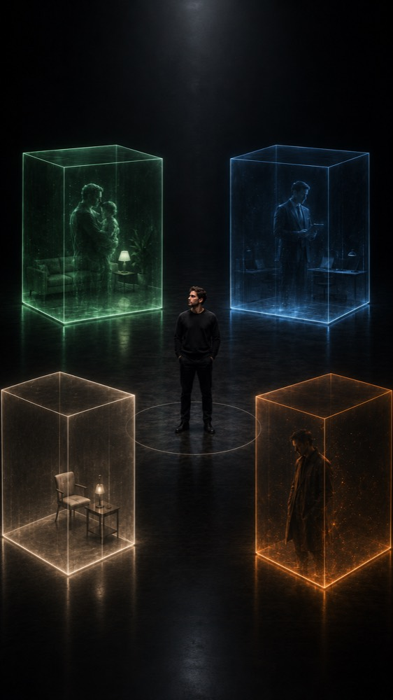
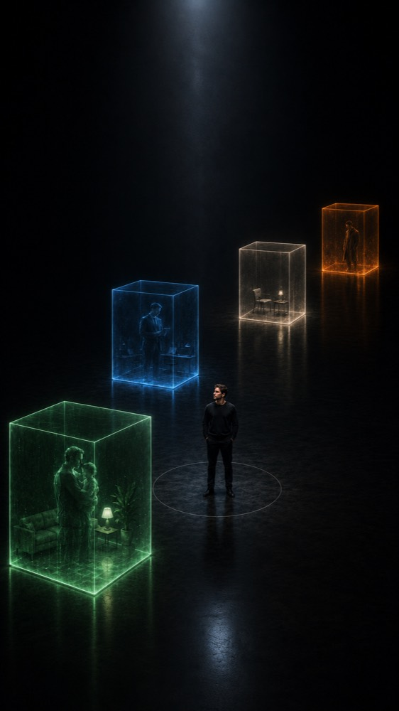

Я остаюсь
собой
Один аккаунт. Один PAGER ID.
PAGER показывает разное разным людям. Выберите профиль — страница откроется через него.
Новая модель приватного общения
PAGER создан чтобы их сохранять. Я остаюсь собой, но открываюсь по-разному.
Связь без раскрытия
личного номера
Один ID для всех контекстов общения
Профиль решает, что доступно человеку и сколько живёт контакт. Переключите — вместе с вами переключится вся страница.
Продукт и партнёрства. Отвечаю в рабочее время.
24 часа прошли. Связь закрыта.
Один контакт —
один понятный набор возможностей


Один аккаунт. Один PAGER ID.
Для близких, для работы, для временных контактов, для отдельного круга.
Имя, фотография, описание, аудитория и видимость настраиваются отдельно.
Для каждого контакта — своя дистанция, видимость и уровень доступа.
В обычном мессенджере разные части жизни сходятся в одной точке: одно имя, одна фотография, одно описание — для всех. Так выглядит коллапс контекста.
Профиль общения решает,
что человеку доступно.
Мультипрофиль решает,
каким он видит вас.
Курьер, арендодатель, покупатель, служба поддержки должны иметь возможность связаться. Это не значит, что контакт должен сохраняться навсегда.
Доставка · Аренда · Объявления · Поддержка · Разовые услуги
Следующий milestone — стабильная private beta с завершённым пользовательским опытом, проверенная на первых когортах.
Сначала пользовательская ценность и B2C → затем корпоративная инфраструктура
Профили, мультипрофиль, запросы, временные контакты.
Закрытое тестирование основных сценариев.
Удержание, временное общение, использование профилей.
Подготовка к публичному распространению.
Аудио, видео, звонки, бизнес-доступ, API.
Раунд позволит завершить ключевые механики, стабилизировать приложение и проверить PAGER на первых пользовательских когортах.
Работающая private beta с подтверждённым
использованием ключевых механик PAGER.
Основатель с опытом в предпринимательстве,
цифровых продуктах и сценарных механиках.
Проект развивается не как абстрактная идея, а как работающий MVP с определённой продуктовой системой и планом выхода в beta.